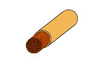
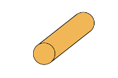
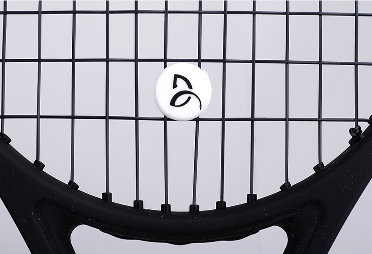

Choosing Tennis Racket Strings

INTRODUCTION
No matter your skill level in tennis—if you have played for a few years, a decade or have never touched a racket—selecting proper tennis racket strings can be intimidating. The importance of strings must also not be overlooked. Many professionals have even compared the metal racket frame to the body of a car and the strings to the engine! New strings are rapidly being developed as the sport of tennis evolves. With each type of string, many with names corresponding to the brands (i.e. “Rev” or “Speed”), it can be confusing comparing and contrasting strings to understand which best aligns with your desires. With the variety of brands and types of strings, it is important to understand what tennis strings can do for your tennis play and why they can be so pivotal. What’s more, if you end up selecting a tennis string (perhaps you receive help this time from a tennis professional), in just a few months you may be due to once again need new tennis racket strings. This time, however, as your preferences and skills have changed, the optimal strings for you may have changed as well!
What’s the solution then? The strings that you need in order to play the sport, and that can improve
your play and comfort are complicated and seemingly shrouded in a landscape of complicated jargon…
That’s exactly where this website comes in. In the following sections I intend to breakdown the four
primary types of tennis racket strings that underly the tennis racket string market. These four
materials make up the majority of the tennis racket strings publicly available and offer an ideal
range of strengths and weaknesses that correspond to all aspects of the tennis game (strength, spin,
control, etc.).
Without further ado, let’s get right into it!
How Tennis Racket Strings Work
The primary question you might be wondering about at this point is how strings can impact so
many areas of
your tennis game. For this, we must take a brief dive into how the strings operate. At their
core, tennis racket strings are the platform that simply transfers the energy from your racket
to the ball. In this case, as the racket strings hit into the ball, they stretch and form a
pocket around the ball. At the point when all of the kinetic energy from the ball traveling in
the opposite direction from the racket is transformed, for an instant (a micro-second!), the
ball stops in place [1]. Then, faster than the blink of an eye, the stretched strings with their
significant potential energy quickly contract (or snap) back to their original position. This
snapping motion forces the ball in the opposite direction out of the string-pocket.
It is important to note one of the key forces described here, and one that we will explore
deeply, is the concept of tension. Among other features of tennis racket strings, the string
tension dramatically affects the tennis racket’s play [1].
MATERIALS
It is now necessary to take a dive into the makeup of tennis racket strings. This is the
differentiating factor that can demystify the racket string marketplace. We will break down each
type of material from the most common four: Natural Gut, Synthetic Gut (Nylon), Multifilament and
Polyester.
In order to have a consistent and comparable understanding of each racket string, core attributes
under consideration will include power, control, comfort, spin, price and durability [4].
Natural Gut

Cross section of natural gut string.
Natural gut strings are made from animal intestines and were first created by Pierre Babalot in
1874 -
he went on to found one of the largest tennis racket companies today [5]! Best known for their
excellent playability and comfort, the strings seek to provide a balance of power and control,
rendering them a popular
choice among professional players [4]. However, they are also by far the most expensive and are
less
durable
compared to the other options. In fact, natural gut strings are known to lose tension and break
more easily in wet environments as the moisture breaks down the natural fibers [6].
Natural Gut Strings are also capable of withstanding relatively high tensions. We will dive into
the
importance of tension in a later section.
It is often recommended that those recovering from arm injuries or with sensitive joints
consider using natural gut as it can help to absorb the shock from the ball.
Natural Gut String Qualities
| Natural Gut | |
|---|---|
| Power | High |
| Control | Moderate |
| Comfort | High |
| Durability | Low |
Synthetic Gut or Nylon

Cross section of synthetic gut string.
Synthetic gut strings are constructed from nylon and offer a decent balance of playability and durability at a lower price point. They are a versatile option suitable for players of all levels, providing decent power and control. As the cross section depicts, the string benefits from the strong inner core, combined with the flexible, woven outer structure. This combination yields greater durability than natural gut [4]. At the same time, it provides some of the flexibility that natural gut is popular for. The process and materials used to create these strings render them one of the cheapest types of strings available to buy.
Synthetic Gut String Qualities
| Synthetic Gut | |
|---|---|
| Power | Moderate |
| Control | Moderate |
| Comfort | Moderate |
| Durability | Moderate |
Multifilament
Cross section of multifilament string.
Multifilament strings are made from hundreds of small strings interwoven to create soft, flexible inner core racket string. While this yields a comfortable feel and solid all-around power, the trade-off is lower durability compared to other string types - particularly for players with very strong and aggressive swings. Like natural gut, the strings are known for their arm-friendly nature, making them a good choice for players with arm issues or those seeking a softer feel [7]. Furthermore, multifilament is the most similar to natural gut tennis strings. As the design for these strings has developed over the years, they have become even more similar to the experience of a true natural gut string.
Multifilament String Qualities
| Multifilament | |
|---|---|
| Power | High |
| Control | Low |
| Comfort | High |
| Durability | Low to Moderate |
Polyester
Cross section of polyester string.
As it appears from the cross section, polyester is the most rigid type of string with a singular core. This rigidity enables the string to be extremely tense and durable in very high-level tennis play. For this reason, polyester is generally a top choice among professional tennis players seeking to maximize the control over their shots [8]. Additionally, it is important to note that while polyester is rated relatively lower for "power," this does not mean that a player cannot hit incredibly hard and fast tennis shots. Instead, this means that the power is up to the player to generate, unlike the natural gut strings (which have the fling-shot motion described above that accelerates the ball for the player). The high durability is also a valuable asset for players who hit the ball powerfully or who return powerful shots. The typically high tension of polyester strings can lead to a firmer feel and significanlty less comfort than other string options. For this reason, many players choose to opt for other string options.
Polyester String Qualities
| Polyester | |
|---|---|
| Power | Low |
| Control | High |
| Comfort | Low |
| Durability | High |
TENSION
The tension of your tennis strings can greatly affect your performance both positively and
negatively. Lower tension strings
can provide more power and a larger "sweet spot" (the central area of the strings where the ball
bounces off the racket best), while higher tension strings are known to offer more control and spin.
Take into account the following considerations to help determine which tension is the best for you
[9].
Additionally, racket strings mentioned above that are more powerful will generally need a lower
tension. Strings that are more control-oriented will generally need a higher tension.
To visualize
string tension, one can picture that lower tension strings act more like a trampoline, while higher
tension strings are more like a set of drums.
Simplified Overview of Specifications and Qualities by Tension Level
| Low Tension | Medium Tension | High Tension | |
|---|---|---|---|
| Power | High | Moderate | Low |
| Control | Low | Moderate | High |
| Comfort | High | Moderate | Low |
| Durability | High | Moderate | Low |
Lower tension yields a trampoline-like shape.
Low Tension
Low tension strings are ideal for newer players, and those who generally hit slower shots. The
looseness of the strings increases the player's power, while absorbing the shock of the ball.
This can help prevent arm injuries and provide a more pleasant experience.
Lower tension typically ranges from 40-50 lbs, and can be read from a simple tension reader [10].
High Tension
High tension strings provide more control and spin potential, rendering them a better option for
advanced
players who generate their own power. Advanced players also benefit as the higher tension can
absorb the power of their opponent's shot. This is surprisingly important as a low tension
racket returning a very fast shot may send the ball flying out of bounds on the court. It must
also be noted that high tension strings firmer feel (which some players consider uncomfortable
on their hands and arms) and are less forgiving on
off-center hits.
Higher tension typically ranges from 55-70 lbs, with tensions greater than 65 typically reserved
for professional-level players. [10].
Some players seeking to reduce the shock and vibration caused by hitting the ball may also
consider using a tennis shock absorber. These small rubber devices grip onto the racket strings
and absorb some shock from the ball when the racket makes contact. See an example shock absorber
pictured below [10].

Shock absorbers grip onto the center of the strings.
What Tension Is Best?
As is likely clear, there is no simple answer for the optimal tennis racket string tension. The goal of this portion is to inform your decision and help you understand the complex dynamics of the strings. The questionnaire at the end of this page will help take you to the next step and lead you to a string that can fit your preferences. Furthermore, as you gain experience, you might consider experimenting with a variety of tensions to find what works best for your unique playing style. There is surely no "one-size-fits-all!"
A Brief Note on Durability
While we considered how each tennis racket string can impact play, strings are not cheap.
Typically strings range in price from roughly $10 to $30, with the labor cost to restring it
another $20 to $30. An expensive machine is required to string rackets, so it is generally not
possible to restring a racket yourself.
During play, strings may snap apart as a result of natural wear and tear. It is, however,
generally advised that players should replace their strings as many times a year as they
play per week. In other words, if you play tennis five times per week, you can expect to have
your racket restrung five times in a year.
While this rule of thumb holds true for intermediate players, newer players can
expect to restring their rackets less frequently and advanced players may need more
frequent restringings. For example, a newer player may only
need to restring their racket once or twice a year.
CONCLUSION
Choosing the right tennis strings can drastically impact your performance on the court.
This website overview can help to orient players unfamiliar with the dynamics of tennis racket
strings, pointing you in the right direction. Understanding the strings can also help players better
understand the dynamics of their swings and why their shots may be behaving in a certain way or
another.
The sport of tennis is quite difficult, and certainly one cannot expect tennis racket strings to
change their game overnight. I personally have played the sport since I was young and can attest to
the years of practice it takes to get a proper feel for the racket and the game. I do believe that
had I been introduced to the complexities of the racket at a younger age, it would have accelerated
my
understanding of tennis. By studying and filling out this website, I hope that you can gain a better
understanding of the sport of tennis, and begin with knowledge that will steadily help you build
your game up to its potential.
I currently use polyester strings at 51 lbs of tension. I have found that this tension allows me to
balance power with accuracy. That said, throughout my many years of playing tennis, I have switched
(and sometimes switched back) between tennis racket strings and tensions up until I finally settled
upon what I use today. Furthermore, I don't expect I will stick with high tension polyester as I
steadily play less tennis in the future!
I implore you to experiment with different strings and tensions to find what works best for you as you play. Remember, while no string is perfect, as your preferences evolve, you will find one that meets your needs. Besides the tennis racket knowledge, this website seeks to pair you with a compatible racket string to jumpstart your game. As you continue on with your tennis practice, feel free to revisit this page and re-enter your preferences and skills in the questionnaire to determine how you have changed.
Still not sure where to start?
That's totally understandable! A lot of factors go into choosing your strings.
For a quick suggestion, take this short questionnaire. The results have been tested with a local
tennis professional from my town, who graciously helped me refine the recommendation.
The
sliders are intended to allow more flexibility with your answers, I recognize that many new tennis
players may not know exactly how they hit or what they are looking for and that's alright!
Sources
[2] What tennis strings are made of - strings explained. Tennis Strings Explained. (n.d.). https://www.tennis-warehouse.com/learning_center/gear_guides/tennis_string/material_gauge_tension_explained.html?srsltid=AfmBOoqs6rb26WG-XLvcbu5zvspKife0pZCcPTULwEO_789W0QyvkvHD
[3] Tennis Strings Overview. Tennis strings explained. (n.d.). https://www.tenniswarehouse-europe.com/Learning_Center/Gear_Guides/Tennis_String/Tennis_Strings_Explained.html
[4] How to choose a tennis string. Wilson Sporting Goods. (2024, January 18). https://www.wilson.com/en-us/blog/tennis/how-tos/how-choose-tennis-string
[5] Trevor Meier. (2017, September 27). How natural gut tennis string is made. Tennis Blog. https://www.globaltennisnetwork.com/tennis-blog/how-natural-gut-string-is-made
[6] The impact of temperature on tennis string. Geau Sport. (n.d.). https://geausport.com/blogs/on-the-geau/impact-of-temperature-on-tennis-string
[7] How to pick the right tennis string? A tennis string guide. All Things Tennis ltd. (n.d.). https://allthingstennis.co.uk/pages/tennisstring-guide#:~:text=Multifilament%20strings%20are%20made%20up,better%20for%20power%20and%20comfort.
[8] Who should use polyester strings?. : (2020, April 8). https://tennisjunction.com/use-polyester-strings/
[9] Everything you need to know about string tension. Dunlop Sports. (n.d.). https://dunlopsports.com/fr/love-the-game/everything-you-need-to-know-about-string-tension/#:~:text=The%20looser%20the%20string%20tension,it’s%20going%20to%20catapult%20back.
[10] What string tension should I use in my tennis racket?. Wilson Sporting Goods. (2024b, May 10). https://www.wilson.com/en-us/blog/tennis/how-tos/what-string-tension-should-i-use-my-tennis-racket
Additional Attribution: I want to thank the various tennis professionals I called or met with at Forever Tennis in St. Louis, or Boston Ski + Tennis back at home in Boston. I am truly grateful that they helped me take this website to the next level, and believe that their signficant input on refining the algorithm to choose racket strings will be useful for many years to come! I have already reached out to my highschool coach to see if he would be interested in using this website!
Image Sources
Tennis Racket with Two Strings On Top Header Image
{kind=link}
Natural Gut String Cross Section
Synthetic Gut String Cross Section
Multifilament String Cross Section
Polyester String Cross Section
Tension Power and Control Breakdown
Tennis Racket Shock Absorber Image
{kind=link}
About Me Tennis Racket Hitting Ball Video
Home Page Tennis Racket Striking Ball Gif
{kind=link}